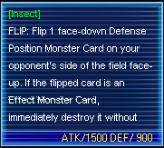
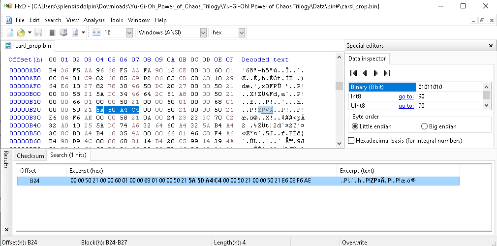
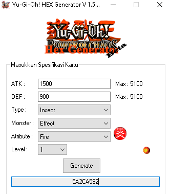

Project Details
Game Modding using HEX-Editor Yugioh Power of Chaos
This project showcases my exploration into game modding through direct binary editing using a HEX editor. The main objective was to modify in-game data and assets within Yu-Gi-Oh! Power of Chaos—including card properties, visuals, and text—without access to the game’s source code.Through careful analysis of the game’s hexadecimal structure, I identified memory addresses corresponding to specific in-game features and edited them to achieve customized gameplay experiences. This process required strong attention to detail, pattern recognition, and a solid understanding of data encoding.This project highlights my ability to work with low-level data manipulation, reverse engineering, and problem-solving in digital game environments.Tools Used: HEX Editor (HxD), Resource Hacker. Skills Demonstrated: Binary editing, reverse engineering, debugging, data analysis
Workflow
Game Data Analysis
HEX Modification and Testing
Optimization and Customization
Project Development Stages
The process of modding Yu-Gi-Oh! Power of Chaos using a HEX editor was divided into three main stages: data analysis, modification and testing, and optimization and customization.
- Game Data Analysis
- HEX Modification and Testing
- Optimization and Customization
I began by exploring the internal structure of the game files using a HEX editor (HxD). By examining the raw binary data, I learned how the game stored information such as card attributes, character names, text dialogues, and visual elements. Through pattern recognition and offset mapping, I was able to locate specific sections of the game code responsible for these elements. This stage was crucial for building a clear understanding of the game’s memory layout before making any changes.
Card Description and Stats
focused on applying targeted edits within the binary files. Using the addresses identified earlier, I modified hexadecimal values to adjust in-game parameters, such as card power levels, descriptions, and textures. Each edit was carefully tested in-game to ensure the changes worked as intended and did not cause file corruption or crashes. This stage required precision and iterative testing to maintain game stability while achieving the desired customization.
Hex Editting Using HxD
Find the Value Using tools
At this stage, the system that has been built becomes a ready-to-use software. But before that, testing will be carried out to test the feasibility of the system whether the system is in accordance with the conditions that have been determined from the start. In the implementation of system testing, procedural preparation and the formation of a test plan are carried out. This is done to make it easier when testing the system.